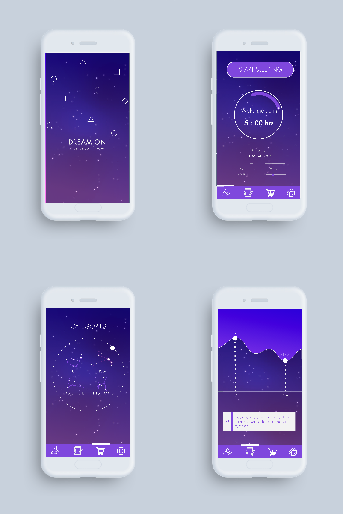
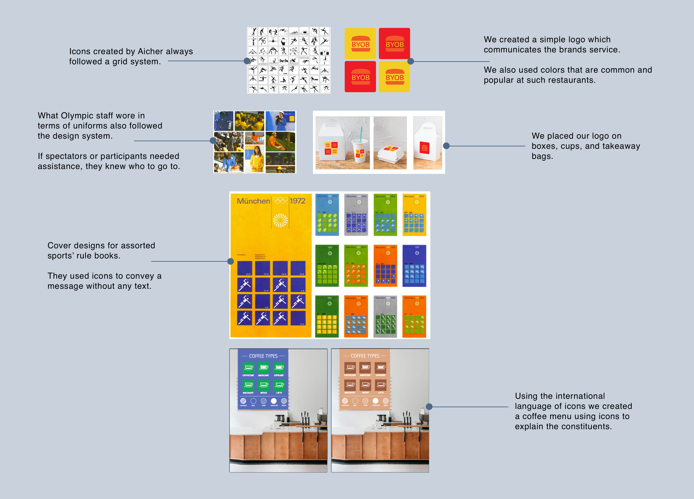
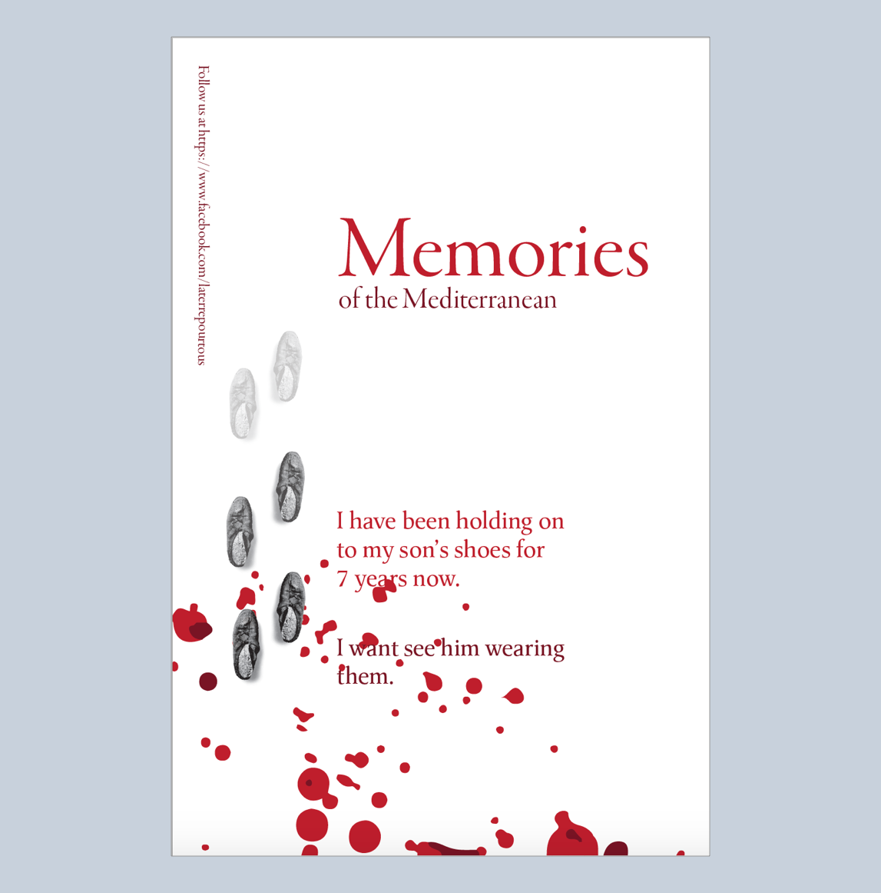
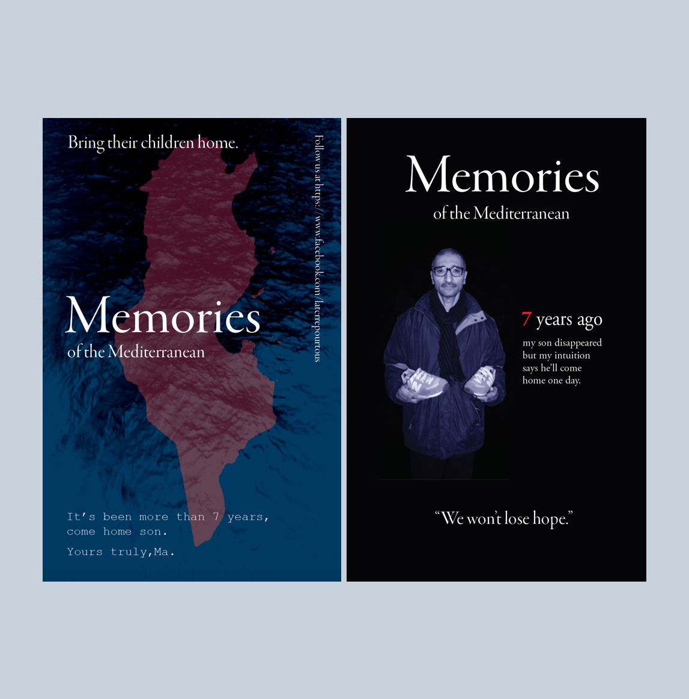
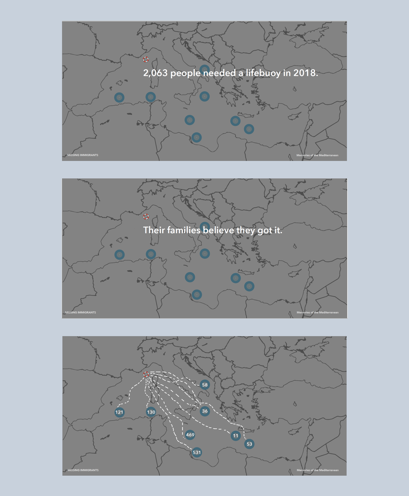

Tools used:
Over the past one year I have explored the world of visual design through multiple projects, critiques, and iterations.
Visual Designer
The following sections are a curation of four of my favorite projects each exploring a different direction of visual design.
-
Dream On - Visual Redesign
WHY?
Understand the importantance of mapping between visual design and application usage.
-
Learning from Otl Aicher
WHY?
To learn in depth about one of the greatest graphic desingers and understand the importance of a visual communication system.
-
Memories of the Mediterranean
WHY?
To create awareness around the global crisis of missing immigrants.
-
Modernism and Post Modernism
WHY?
To understand how the voice of design keeps changing with time.
Dream On encourages you to "Be part of the World's largest dream experiment".This project was as interesting and dreamy as the name suggests.
Redesigning and critiquing a finished product is always challenging. Yet with the spirit of iteration I looked at a visual redesign and used constellations as my inspiration. Below are the initial few screens I explored with a different visual system than the original app which can be viewed here.
Team Members: Gabrielle Tabachnik and Matt Smallish
Through a semester project my team and I studied almost all posters, products, pictograms, and icons created by Olt Aicher. Aicher's was reluctantly drafted into the German army during WWII, but after continuous attempt, deserted the army in 1945. The war really shaped many of Aicher’s design styles.
Before the war, he was still thinking of art and philosophy and theology. It was more aesthetic thinking. After the war he turned away from art and believed that good design is only a design which works in reality and which serves everyday life and the human being.
Inspired by his idea of creating simple international designs, we created the brand identity for a Gourmet Burger Store "BYOB"
Shared here are a couple of items (icons, logo, swag, and menu) from that set designed by me:
In collaboration with La Terre Pour Tous, a migrant advocacy group based in Tunisia my class was tasked with creating components for an online digital platform, called “Memories of the Mediterranean,” aimed to help give voice and visibility to missing migrants.
Visually communicating emotions like hope and faith were important. The use of right colors, typography, and textures were the key to creating that simple yet strong visual message.
  
Art and history have always been very close to the society. Desing today falls under the same category. To explore the how different trends in the industry influence design we created two versions of the same website. The first using post modernism and the second with modernism.